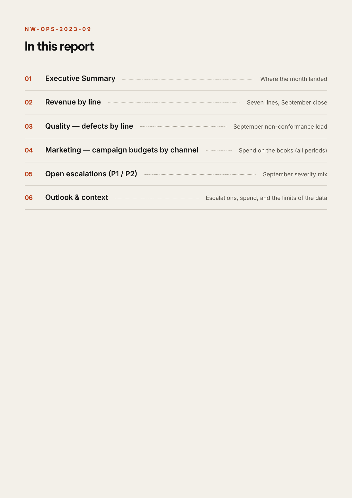
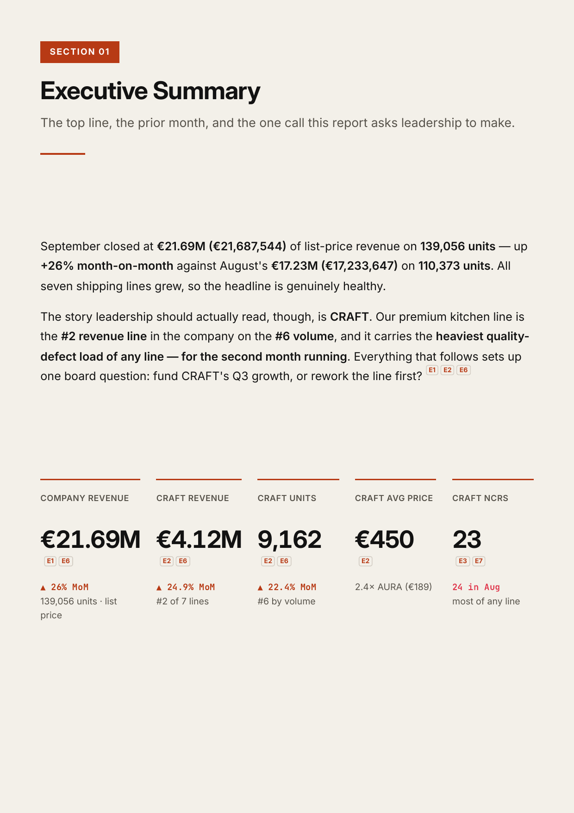
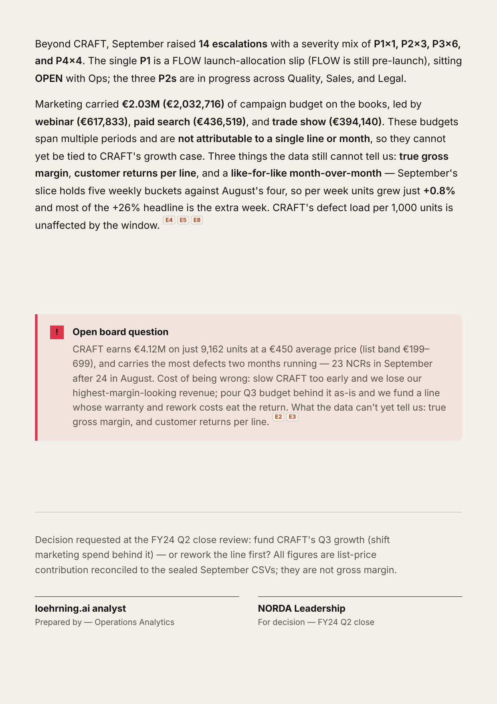

The AI Analyst — Workshop
That reading is judgment — which numbers matter, what they mean here, what they add up to. It lives in one person's head: subjective, never quite the same twice, gone the day they leave. Today you write it down once, so the same reading runs on every month's report.
~90 minutes · Claude Code — a panel inside the Claude desktop app · nothing to install
The frame — for the next hour
A family-owned electronics maker in Augsburg — ~850 people, about €180M a year, eight product lines from speakers to espresso machines. The September close has just landed, and the leadership review wants an answer about one of those lines. You're the analyst it goes to.
NORDA is fully synthetic — every number in this room is safe to share
Today's path — five prompts, one thread
Each prompt leaves something behind. This rail returns on every build slide with your position lit — you always know where you are.
What's on your laptop — the participant kit
■ the highlighted rows ship unfinished on purpose — prompts 2 · 3 · 4 fill them · everything else is real material, ready to read
Prompt 1 of 5 — ground it
Claude Code is the panel in the Claude desktop app that can see a folder. Open it on the kit — that's the whole setup (START-HERE.md walks you through it) — and the folder becomes the context: Claude reads the backstory and this month's report, then plays the month back to you, including the question hiding in it.
The material — the monthly report
NORDA Werke's September close — an 8-page monthly operations report: €21.69M across seven product lines, ending in one decision on the last page. Exec summary, revenue by line, defects, marketing, escalations, the call. And it wasn't typed from thin air — it was written from raw data. That's next.
reports/2023-09-monthly-report.md · the file you open

The receipts — data/ · real rows, shown verbatim
| line | model_code | model_name | base_price_eur |
|---|---|---|---|
| CRAFT | E1 | CRAFT Espresso | 449 |
| CRAFT | E2 | CRAFT Espresso Pro | 699 |
| CRAFT | G1 | CRAFT Grinder | 199 |
…and 20 more rows — CRAFT's whole price list is these 3 models
| week_start | sku | units_actual |
|---|---|---|
| 2023-09-02 | NW-CRAFT-E2-BLK-CH | 164 |
| 2023-09-16 | NW-CRAFT-E1-SLV-GB | 314 |
| 2023-09-30 | NW-CRAFT-G1-SLV-BE | 368 |
…and 2,112 more rows — 95 are CRAFT × September: 9,162 units
| ncr_id | ncr_date | line | qty_affected |
|---|---|---|---|
| NCR-000936 | 2023-09-02 | CRAFT | 160 |
| NCR-000035 | 2023-09-23 | CRAFT | 231 |
…and 125 more rows — 23 are CRAFT × September, the most of any line
The material — where the numbers come from
Every figure in the report is a roll-up of rows like these. The report says CRAFT did €4.12M — the receipts agree, to the euro: 95 September rows, 9,162 units, €4,124,238. A good analyst reads the story and checks the receipts. In prompt 3, yours will do exactly that — live.
data/*.csv · in your kit — open any of them in Excel
The first analyst move — what to measure
A monthly report holds hundreds of figures. Your job is choosing the few that answer: was this a good month, and what do we do next? For NORDA, five — plus one flag.
the small E# chips on the page are the report's own evidence references — every figure names its source

The analyst work — definitions
Read CRAFT's €450 as “high margin” and you'd scale it — but it's list price, not margin. Defining the number is the skilled work you take to your own company.
Read together — the month's question
CRAFT is the #2 revenue line — €4.12M — on the #6 volume, yet it carries the heaviest defect load of any line, two months running: 23 NCRs in September after 24 in August. (A dash in the NCR column means no records logged that month, not zero defects.)
Prompt 2 of 5 — teach it your definitions
A Skill is a plain text file of instructions Claude reads before it works — an onboarding doc for your analyst, written in sentences anyone can read. It ships half-written; Claude asks you the blanks, you answer in plain English, and it writes your words into the file. From then on, every time Claude works in this folder, it reads your rules first.
Prompt 3 of 5 — run it on the report
This is where the CSVs come back: the Skill doesn't trust the report, it checks it. Ask “how did NORDA do?” without a Skill and you get a different generic paragraph each time; with yours, the same rulebook loads every time — and the flag trips on evidence, not a hunch.
| Line | Revenue | Units | NCRs |
|---|---|---|---|
| AURA | €7,962,953 | 42,197 | 18 |
| CRAFT | €4,124,238 | 9,162 | 23 |
| ECHO | €3,162,514 | 19,256 | — |
Prompt 4 of 5 — build the dashboard
Why a dashboard? The 8-page report is for the analyst — the room gets one page. And why is it free? Because the page is a dumb template sitting in your folder: Claude writes one file of numbers, and the page renders whatever that file holds. The intelligence already happened — in your rules.
Prompt 5 of 5 — make the call
The VP of Sales wants more Q3 marketing behind CRAFT. Vote first, hands up — then send the prompt and see if your own numbers agree with you.
CRAFT defects — 24 in August, 23 in September · a pattern, not noise · P1–P4 on the memo = escalation severity, P1 most severe

The habit that transfers — any report, any company
Two prompts carry to any monthly report, whatever the company: trace every figure to its source, then stress-test the call against itself.
Case 2 — leave the sandbox
NORDA is synthetic; the recipe isn't. Meta's Q2 2026 results are a public SEC filing — Claude fetches it live, nothing to download. And it's the CRAFT pattern at a hundred-billion-dollar scale: a strong headline with a question underneath. Your kit's meta-quarterly/TASK.md carries three prompts: fetch it · define six metrics and extract · then the advanced step — no template this time, Claude designs the dashboard itself.
source: SEC 8-K exhibit 99.1 · filed 2026-07-29 · public — no NDA, no download, fetched live
It repeats — because the reading is written down
Because the reading is written down, it no longer leaves with the person. Drop next month's file in reports/, re-run the Skill, rebuild the dashboard — and Claude tells you what changed and whether the CRAFT call still holds. You keep the report, the data pack, your Skill, the dashboard, and the prompts, and re-run the worksheet on your own numbers.